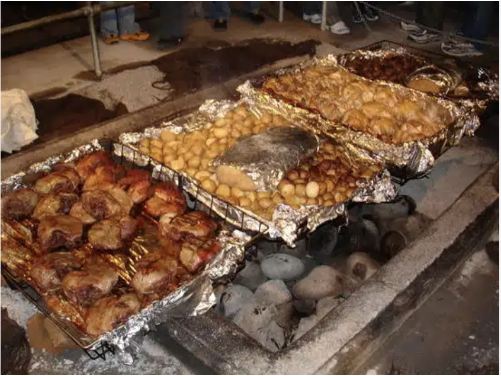
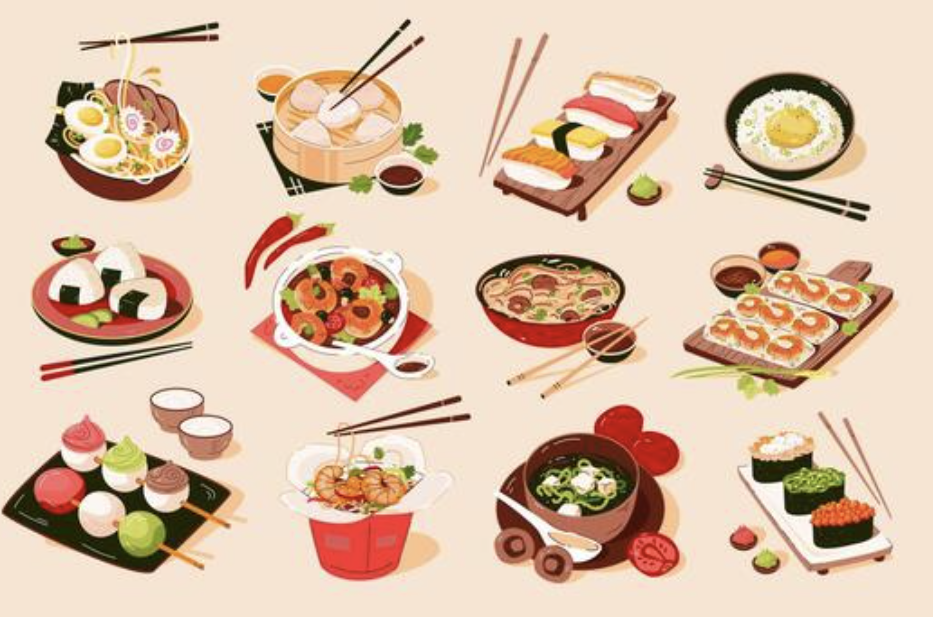
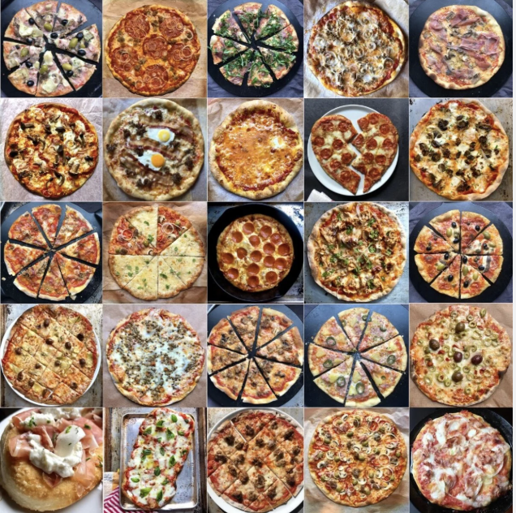

Hāngī is a traditional food that is made underground. It is mostly cooked using heat stones. This way of cooking food, which is done by steaming it makes the food taste really good. It also shows that Māori people have a strong connection to the land and to the things that their ancestors did.

Includes Chinese, Japanese, Thai dishes. This dishes not only showcases flavours and techniques but showcases cultural values and histories of its society. Japanese food is simple. They use what is in season. Thai food has a lot of tastes like sweet and sour and salty and spicy. This shows that Thai people like to have a balance, in what they eat.

Pizza, pasta, and baked goods. This features rich and diverse flavours of food with each reflecting deep cultural traditions.